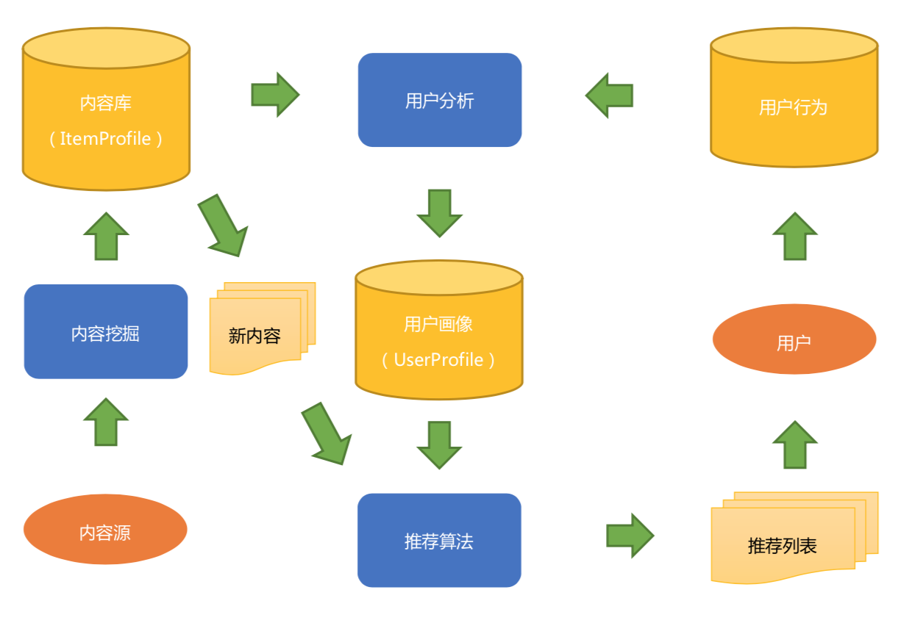
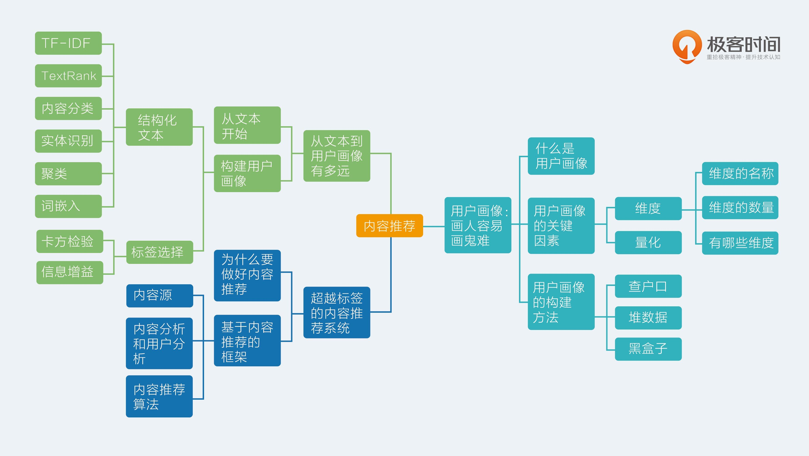

- 00 开篇词 用知识去对抗技术不平等.md
- 01 你真的需要个性化推荐系统吗_.md
- 02 个性化推荐系统有哪些绕不开的经典问题？.md
- 03 这些你必须应该具备的思维模式.md
- 04 画鬼容易画人难：用户画像的“能”和“不能”.md
- 05 从文本到用户画像有多远.md
- 06 超越标签的内容推荐系统.md
- 07 人以群分，你是什么人就看到什么世界.md
- 08 解密“看了又看”和“买了又买”.md
- 09 协同过滤中的相似度计算方法有哪些.md
- 10 那些在Netflix Prize中大放异彩的推荐算法.md
- 11 Facebook是怎么为十亿人互相推荐好友的.md
- 12 如果关注排序效果，那么这个模型可以帮到你.md
- 13 经典模型融合办法：线性模型和树模型的组合拳.md
- 14 一网打尽协同过滤、矩阵分解和线性模型.md
- 15 深度和宽度兼具的融合模型 Wide and Deep.md
- 16 简单却有效的Bandit算法.md
- 17 结合上下文信息的Bandit算法.md
- 18 如何将Bandit算法与协同过滤结合使用.md
- 19 深度学习在推荐系统中的应用有哪些_.md
- 20 用RNN构建个性化音乐播单.md
- 21 构建一个科学的排行榜体系.md
- 22 实用的加权采样算法.md
- 23 推荐候选池的去重策略.md
- 24 典型的信息流架构是什么样的.md
- 25 Netflix个性化推荐架构.md
- 26 总览推荐架构和搜索、广告的关系.md
- 27 巧妇难为无米之炊：数据采集关键要素.md
- 28 让你的推荐系统反应更快：实时推荐.md
- 29 让数据驱动落地，你需要一个实验平台.md
- 30 推荐系统服务化、存储选型及API设计.md
- 31 推荐系统的测试方法及常用指标介绍.md
- 32 道高一尺魔高一丈：推荐系统的攻防.md
- 33 和推荐系统有关的开源工具及框架介绍.md
- 34 推荐系统在互联网产品商业链条中的地位.md
- 35 说说信息流的前世今生.md
- 36 组建推荐团队及工程师的学习路径.md
- 加餐 推荐系统的参考阅读.md
- 结束语 遇“荐”之后，江湖再见.md
06 超越标签的内容推荐系统
我曾在不同公司里都听到过，他们的产品经理或者大佬问过这样的问题：我们的推荐系统标签够不够？
相信你也遇到过类似的问题。这其实是一个很大的误区：基于内容的推荐系统，标签只是很小一部分。
而且就算是标签，衡量质量的方式也不是数目够不够；所以，今天我要讲的内容，就是说一说脱离标签定式思维的内容推荐。
为什么要做好内容推荐
所谓的基于内容推荐，通俗一点来讲，就是一个包装成推荐系统的信息检索系统。这听上去有点残酷，但通常一个复杂的推荐系统很可能是从基于内容推荐成长起来的。
可以说，基于内容的推荐系统是一个推荐系统的孩童时代，所以，我们不能让自己的推荐系统输在起跑线上，得富养才行。那么，首先我就来讲一讲如何养成一个基于内容的推荐系统。
为什么基于内容的推荐系统这么重要呢？因为内容数据非常易得，哪怕是在一个产品刚刚上线，用心找的话总能找到一些可以使用的内容，不需要有用户行为数据就能够做出推荐系统的第一版。
内容数据尤其是文本，只要深入挖掘，就可以挖掘出一些很有用的信息供推荐系统使用。
另外，著名的流媒体音乐网站 Pandora，其音乐推荐系统背后的“音乐基因工程”，实质上就是人工为音乐标注了各种维度的属性，这样，即便使用基于内容推荐的方式，也做出了很好的推荐效果。
听上去，上面这段话特别像是在安慰还处在冷启动阶段的你，事实上呢，其实并不全是，内容推荐的方式还有它的必要性。推荐系统总是需要接入新的物品，这些新的物品在一开始没有任何展示机会，显然就没有用户反馈，这时候只有内容能帮它。
基于内容的推荐能把这些新物品找机会推荐出去，从而获得一些展示机会，积累用户反馈、走上巅峰、占据热门排行榜。
要把基于内容的推荐做好，需要做好“抓、洗、挖、算”四门功课。它们分别是对应了下面的内容。
- 抓：大厂们从来不公开说的一件事是，他们一直在持续抓数据丰富自己的内容，所以做好一个基于内容的推荐，抓取数据补充内容源，增加分析的维度，两者必不可少。
- 洗：抓来的数据，相当于捡别人掉地上的东西吃，我们也得注意卫生，洗洗更健康，数据也一样，冗余的内容、垃圾内容、政治色情等敏感内容等等都需要被洗出去。
- 挖：不管是抓来的数据，还是自家的数据，如果不深入挖掘，那就和捧着金饭碗去要饭一样，浪费了大好资源。可以说，很多推荐系统提升效果并不是用了更复杂的推荐算法，而是对内容的挖掘做得更加深入。
- 算：匹配用户的兴趣和物品的属性，计算出更合理的相关性，这是推荐系统本身的使命，不仅仅是基于内容的推荐才要做的。
那么，这四门功课到底如何分布在基于内容的推荐系统中呢？
下面我和你一起来看看，基于内容推荐的框架
在文稿中，我放了一张图，一个典型基于内容推荐的框架图是下面这样的：-

简要介绍一下这张图的流程和基本元素。
内容这一端：内容源经过内容分析，得到结构化的内容库和内容模型，也就是物品画像。用户这一端：用户看过推荐列表后，会产生用户行为数据，结合物品画像，经过用户分析得到用户画像。
以后对于那些没有给用户推荐过的新内容，经过相同的内容分析过程后就可以经过推荐算法匹配，计算得到新的推荐列表给用户。如此周而复始，永不停息。
内容源
在互联网中，抓数据是一件可做不可说的事情，哪怕是市值几千亿的大厂，也有专门的小分队抓数据，补充推荐系统每天的内容消耗。因为，只有当内容有多样性了，一个推荐系统才有存在的合法性，所以大厂职工们抓数据也是为了保住自己的饭碗。
爬虫技术本身非常复杂、非常有学问，比推荐算法难多了，这里就不展开讲了。
不论是抓来的数据还是自家用户产生的数据，都离不开清洗数据。由于各家都在相互借鉴来借鉴去，所以抓到重复的内容也是很有可能的，去重与识别垃圾内容、色情内容、政治敏感内容等都是必修课。
关于这个环节的边角算法，我们在后面的文章中会专门花一些篇幅来讲。
内容分析和用户分析
基于内容的推荐，最重要的不是推荐算法，而是内容挖掘和分析。内容挖掘越深入，哪怕早期推荐算法仅仅是非常硬的规则，也能取得不俗的效果。举个例子，如果推荐物品是短视频，我们分几种情况看：
- 如果短视频本身没有任何结构化信息，如果不挖掘内容，那么除了强推或者随机小流量，没有别的合理曝光逻辑了；
- 如果对视频的文本描述，比如标题等能够有内容分类，比如是娱乐类，那么对于喜欢娱乐的用户来说就很合理；
- 如果能够进一步分析文本的主题，那么对于类似主题感兴趣的用户就可能得到展示；
- 如果还能识别出内容中主角是吴亦凡，那就更精准锁定一部分用户了；
- 如果再对内容本身做到嵌入分析，那么潜藏的语义信息也全部抓住，更能表达内容了。
举这个例子是为了说明：随着内容分析的深入，能抓住的用户群体就越细致，推荐的转化率就越高，用户对产品的好感度也就增加了。上一篇中我列举了文本数据——这也是内容数据最常见形式的分析方法。
内容分析的产出有两个：
- 结构化内容库；
- 内容分析模型。
结构化的内容库，最重要的用途是结合用户反馈行为去学习用户画像，具体的方法在上一篇中已经介绍了。容易被忽略的是第二个用途，在内容分析过程中得到的模型，比如说：
- 分类器模型；
- 主题模型；
- 实体识别模型；
- 嵌入模型。
这些模型主要用在：当新的物品刚刚进入时，需要实时地被推荐出去，这时候对内容的实时分析，提取结构化内容，再于用户画像匹配。
内容推荐算法
对于基于内容的推荐系统，最简单的推荐算法当然是计算相似性即可，用户的画像内容就表示为稀疏的向量，同时内容端也有对应的稀疏向量，两者之间计算余弦相似度，根据相似度对推荐物品排序。
你别嫌糙，如果你内容分析做得深入的话，通常效果还不错，而且基于内容的推荐天然有一个优点：可解释性非常强。
如果再进一步，要更好地利用内容中的结构化信息，因为一个直观的认识是：不同字段的重要性不同。
比如说，一篇新闻，正文和标题中分析出一个人物名，评论中也分析出其他用户讨论提及的一些人物名，都可以用于推荐。直观上新闻的正文和标题中更重要。
那么，我们可以借鉴信息检索中的相关性计算方法来做推荐匹配计算：BM25F算法。常用的开源搜索引擎如Lucene中已经实现了经典的BM25F算法，直接拿来使用即可。
前面提到的两种办法虽然可以做到快速实现、快速上线，但实际上都不属于机器学习方法，因为没有考虑推荐的目标，而我们在之前的专栏中就专门强调了目标思维，那么，按照机器学习思路该怎么做呢？
一种最典型的场景：提高某种行为的转化率，如点击、收藏、转发等。那么标准的做法是：收集这类行为的日志数据，转换成训练样本，训练预估模型。
每一条样本由两部分构成：一部分是特征，包含用户端的画像内容，物品端的结构化内容，可选的还有日志记录时一些上下文场景信息，如时间、地理位置、设备等等，另一部分就是用户行为，作为标注信息，包含“有反馈”和“无反馈”两类。
用这样的样本训练一个二分类器，常用模型是逻辑回归（Logistic Regression）和梯度提升树（GBDT）或者两者的结合。在推荐匹配时，预估用户行为发生的概率，按照概率排序。这样更合理更科学，而且这一条路可以一直迭代优化下去。
总结
基于内容的推荐一般是推荐系统的起步阶段，而且会持续存在，它的重要性不可取代。因为：
- 内容数据始终存在并且蕴含丰富的信息量，不好好利用就可惜了；
- 产品冷启动阶段，没有用户行为，别无选择；
- 新的物品要被推荐出去，首选内容推荐。
基于内容的整体框架也是很清晰的，其中对内容的分析最为重要，推荐算法这一款可以考虑先使用糙快猛的相似度计算，也可以采用机器学习思路训练预估模型，当然这必须得有大量的用户行为做保证。
好的，今天的内容就到这里，你可以在留言中谈一谈你对整个内容推荐链条各个环节的理解吗？欢迎和我一起讨论，感谢你的收听，我们下期再见。
本周知识要点

© 2019 - 2023 Liangliang Lee. Powered by gin and hexo-theme-book.